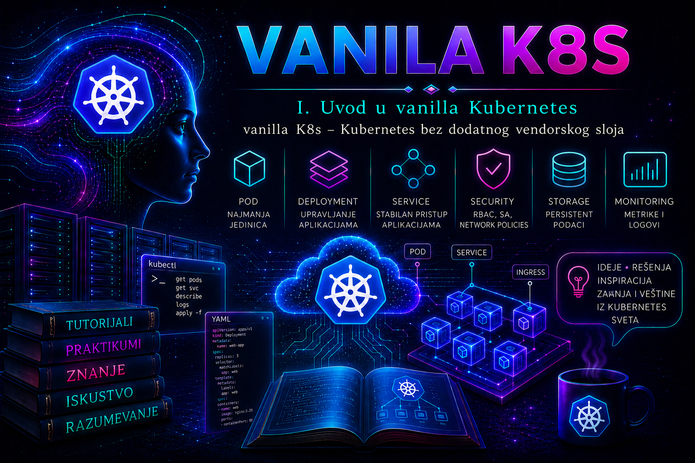

Vanilla Kubernetes

Kubernetes je otvorena, proširiva platforma za orkestraciju kontejnerskih aplikacija. Njegov osnovni zadatak nije samo da pokrene kontejner, već da održava deklarisano željeno stanje sistema: da obezbedi potreban broj instanci aplikacije, rasporedi ih na odgovarajuće čvorove, ponovo ih pokrene nakon otkaza, omogući mrežnu dostupnost, primeni kontrolisana ažuriranja i izloži standardizovan API preko kojeg administratori i alati upravljaju klasterom.
Izraz vanilla Kubernetes nije naziv posebnog proizvoda, licence, sertifikovane distribucije niti zasebnog izdanja. To je neformalni stručni izraz za Kubernetes okruženje koje ostaje blisko upstream projektu i nema dodatni vendorski platformski sloj koji unapred određuje instalaciju, lifecycle, autentikaciju, mrežu, skladište i korisničko iskustvo. Granica ipak nije apsolutna: svaki stvarni klaster uključuje komponente izvan Kubernetes jezgra, pa administrator mora dokumentovati šta u konkretnom okruženju znači „vanilla”, ko održava svaki dodatak i gde se završava odgovornost upstream projekta.
Takav klaster se često podiže alatom kubeadm, ali kubeadm i vanilla Kubernetes nisu sinonimi. kubeadm automatizuje bootstrap klastera prema upstream preporukama; ne obezbeđuje CNI mrežu, produkcioni load balancer za visoko dostupnu kontrolnu ravan, trajno skladište, monitoring, backup niti potpun lifecycle svih dodataka. Organizacija zato samostalno bira i integriše CRI-kompatibilan container runtime, CNI mrežni dodatak, CSI drajver za skladište, Ingress controller ili Gateway API implementaciju, monitoring, centralizovano logovanje, backup i druge operativne komponente.
Vanilla Kubernetes zato ne znači „Kubernetes bez dodataka”. Funkcionalan produkcioni klaster nužno zavisi od komponenti koje nisu sve deo osnovnih Kubernetes binarnih paketa. Kubernetes, na primer, definiše način na koji mrežni i storage dodaci treba da se povežu sa klasterom, ali ne isporučuje univerzalnu produkcionu mrežu niti skladišni sistem. Suština vanilla pristupa jeste da administrator nema unapred sastavljen vendorski proizvod koji te odluke donosi umesto njega.
Šta vanilla Kubernetes obuhvata
Osnovu klastera čine kontrolna ravan i radni čvorovi. Kontrolna ravan donosi odluke o stanju klastera, obrađuje API zahteve i koordinira kontrolne petlje. Radni čvorovi izvršavaju Podove i obezbeđuju lokalne servise potrebne za njihov rad.
| Komponenta | Uloga | Administratorski značaj |
|---|---|---|
kube-apiserver |
Izlaže Kubernetes API i obrađuje zahteve za čitanje i promenu objekata. | Centralna ulazna tačka za kubectl, kontrolere, operatore i automatizaciju. Problemi sa API serverom utiču na celokupno upravljanje klasterom. |
etcd |
Distribuirano skladište konzistentnih podataka o stanju klastera. | Njegov gubitak može značiti gubitak konfiguracije klastera. Zahteva kontrolisan backup, proveru integriteta i testiran restore. |
kube-scheduler |
Bira čvor na kojem će novi Pod biti izvršen. | Analizira resurse, ograničenja, afinitete, taintove i druge uslove. Pod bez dodeljenog čvora često ukazuje na problem raspoređivanja. |
kube-controller-manager |
Pokreće kontrolere koji približavaju trenutno stanje deklarisanom stanju. | Održava replike, čvorove, endpoint objekte, naloge servisa i druge resurse. |
kubelet |
Agent na svakom čvoru koji upravlja Podovima dodeljenim tom čvoru. | Povezuje API, container runtime, volumene i lokalne provere zdravlja. Njegov log je jedan od prvih izvora pri dijagnostici čvora. |
| Container runtime | Preuzima slike i izvršava kontejnere preko CRI interfejsa. | Najčešći izbor je containerd. Docker Engine nije direktni Kubernetes runtime bez dodatnog CRI adaptera. |
kube-proxy ili odgovarajuća implementacija Service prosleđivanja |
Realizuje mrežna pravila Kubernetes Service objekata. | Problemi se vide kao nedostupni servisi iako su Podovi zdravi. Neke CNI implementacije mogu preuzeti ovu funkciju. |
Upstream Kubernetes pruža API, kontrolere, izvršne komponente i standardne objekte kao što su Pod, Deployment, StatefulSet, DaemonSet, Service, ConfigMap, Secret, Namespace, PersistentVolume i RoleBinding. On ne pruža kompletan enterprise proizvod sa jedinstvenim instalacionim programom, ugrađenim registry servisom, unapred izabranim monitoring sistemom, korisničkim portalom, korporativnom podrškom i automatizovanim upravljanjem svim infrastrukturnim zavisnostima. Kubernetes je objavljen pod licencom Apache License 2.0; naziv „vanilla” ne menja licencu niti uvodi poseban model podrške.
Kako Kubernetes održava željeno stanje
Kubernetes je deklarativan sistem. Administrator uglavnom ne izdaje komandu „pokreni ovaj proces na čvoru worker-01”, već kreira objekat koji opisuje željeno stanje. Na primer, Deployment može zahtevati tri replike aplikacije. Kontroleri zatim neprekidno porede željeno i trenutno stanje. Ako jedna replika nestane, kontroler kreira zamenu; ako čvor prestane da radi, odgovarajući Podovi mogu biti ponovo raspoređeni na druge čvorove, pod uslovom da postoje kapacitet, odgovarajuće skladište i dozvoljena pravila raspoređivanja.
Ovaj princip ima važnu posledicu: ručna promena unutar kontejnera uglavnom nije trajna administrativna promena. Kada se Pod ponovo kreira, takva izmena nestaje. Ispravna promena vrši se u deklarativnom izvoru konfiguracije, zatim se primenjuje kroz API i evidentira u sistemu za kontrolu verzija ili drugom odobrenom repozitorijumu konfiguracije.
Kubernetes kontroleri rade asinhrono. Uspešan odgovor API servera na kreiranje objekta potvrđuje da je zahtev prihvaćen i sačuvan, ali ne garantuje da je aplikacija već funkcionalna. Administrator zato razlikuje nekoliko nivoa validacije: objekat postoji, kontroler ga je obradio, Pod je raspoređen, kontejner je pokrenut, readiness provera je uspešna, Service ima endpoint i poslovna funkcija odgovara na zahtev.
Šta znači odsustvo vendorskog sloja
Kod komercijalnih ili upravljanih Kubernetes platformi vendor obično isporučuje sopstveni instalacioni i lifecycle mehanizam, integrisanu autentikaciju, podržane kombinacije verzija, mrežne i storage dodatke, politike bezbednosti, upravljački portal, upgrade kanale i definisani model tehničke podrške. U vanilla klasteru te obaveze prelaze na organizaciju koja ga održava.
Administrator mora da zna koje su verzije komponenti međusobno podržane, kako se obnavljaju sertifikati, kako se nadograđuje svaki control-plane i worker čvor, kako se čuva etcd, ko održava CNI i CSI dodatke i kojim redosledom se primenjuju promene. Upstream politika version skew dozvoljava samo definisana odstupanja između API servera, kubelet-a, controller manager-a, scheduler-a, kube-proxy-ja, kubeadm-a i kubectl-a; pravila nisu ista za svaki par komponenti. Za kubeadm klaster nadogradnja se planira po jednoj minor verziji, najpre za kontrolnu ravan, a zatim za radne čvorove. Zato se ona ne svodi na nekontrolisano ažuriranje paketa operativnog sistema.
Vanilla klaster može biti potpuno automatizovan i produkciono pouzdan, ali takvo stanje nije podrazumevano. Pouzdanost proizlazi iz projektovane visoke dostupnosti, pravilno izabranih dodataka, automatizacije, testiranih procedura oporavka, monitoringa, bezbednosnih kontrola i discipline promena.
Vanilla Kubernetes, distribucija i upravljani servis
| Model | Ko upravlja kontrolnom ravni | Ko bira dodatke | Primarna prednost | Primarno ograničenje |
|---|---|---|---|---|
| Vanilla Kubernetes | Organizacija | Organizacija | Maksimalna kontrola, prenosivost znanja i transparentnost arhitekture. | Najveća operativna odgovornost i potreba za dubokim stručnim znanjem. |
| Kubernetes distribucija | Organizacija uz vendorske alate | Delimično vendor | Integrisane i testirane komponente, podrška i standardizovan lifecycle. | Veća zavisnost od izabranog proizvoda i njegovih podržanih obrazaca. |
| Upravljani Kubernetes servis | Cloud ili drugi pružalac usluge | Delimično pružalac usluge | Smanjen operativni teret za kontrolnu ravan. | Ograničena kontrola nad pojedinim komponentama, troškovima i modelom nadogradnje. |
Izbor modela nije pitanje tehničkog prestiža. Vanilla Kubernetes nije automatski „bolji” zato što administrator kontroliše više komponenti. Za organizaciju bez dovoljno osoblja, dežurstva, automatizacije i iskustva sa distribuiranim sistemima, upravljani servis ili podržana distribucija mogu biti odgovorniji izbor.
Neophodne zavisnosti
Samostalno podignut klaster zahteva pripremljen operativni sistem, stabilnu mrežu, ispravnu sinhronizaciju vremena, DNS rezoluciju, podržani container runtime, CNI dodatak, odgovarajuće kernel module i sysctl parametre. Za produkciju su dodatno potrebni redundantni control-plane čvorovi, stabilna endpoint adresa API servera, backup odvojen od klastera, monitoring, centralizovani logovi, upravljanje sertifikatima, kontrola pristupa i plan kapaciteta.
- Mreža čvorova: svaki čvor mora pouzdano da pristupa API endpointu i potrebnim portovima drugih komponenti. Filtriranje saobraćaja mora biti dokumentovano, a ne rešavano trajnim isključivanjem firewall-a.
- Jedinstveni identiteti: host imena, MAC adrese i machine ID vrednosti ne smeju biti nekontrolisano klonirani između virtuelnih mašina.
- Container runtime: Kubernetes zahteva runtime usklađen sa CRI interfejsom. Dockershim je uklonjen još u Kubernetes 1.24; Docker Engine zato nije neposredno podržan bez zasebnog CRI adaptera. Kubelet i runtime moraju koristiti usklađen cgroup drajver, a na sistemima kojima upravlja
systemdi uz cgroup v2 preporučen jesystemddrajver. - Pod mreža: izabrani Pod CIDR ne sme se preklapati sa mrežom čvorova, VPN opsezima, data-centar rutama ili Service CIDR opsegom.
- Resursi: CPU, memorija, disk i broj inode objekata moraju imati rezervu za sistemske procese, image cache, logove i privremene podatke.
- PKI: sertifikati control-plane komponenti moraju imati kontrolisan rok važenja, zaštićene privatne ključeve i dokumentovanu proceduru obnove.
Prednosti i ograničenja
Najveća prednost vanilla Kubernetes okruženja jeste jasna vidljivost svih slojeva. Administrator može precizno da utvrdi gde prestaje Kubernetes jezgro, a gde počinju mreža, skladište, operativni sistem ili automatizacija. Takvo znanje je prenosivo između različitih distribucija i cloud platformi. Organizacija takođe može da bira komponente prema sopstvenim zahtevima, da izbegne nepotrebne funkcionalnosti i da automatizaciju prilagodi postojećim procesima.
Ista sloboda predstavlja i ograničenje. Svaka izabrana komponenta uvodi sopstveni životni ciklus, bezbednosne ispravke, metrike, logove i kompatibilnost. Ne postoji jedan vendor koji automatski preuzima odgovornost za ceo lanac. Kada Service ne radi, uzrok može biti aplikacija, readiness provera, kube-proxy, CNI, DNS, NetworkPolicy, firewall, ruta, MTU ili infrastrukturni load balancer. Tim mora imati dovoljno znanja da problem izoluje pre eskalacije.
Vanilla pristup je naročito koristan za laboratorije, edukaciju, razvoj standardizovane interne Kubernetes platforme, specijalizovana on-premises okruženja i organizacije koje već imaju zrele timove za Linux, mrežu, skladište, bezbednost i automatizaciju. Nije odgovarajući izbor kada se očekuje da mali tim bez dežurstva ručno održava veliki broj kritičnih klastera.
Najčešće administratorske greške
- Jedan control-plane čvor se naziva produkcijom. Takav klaster nema visoku dostupnost upravljačkog sloja. Otkaz čvora zaustavlja API i kontrolne operacije, čak i kada postojeći kontejneri privremeno nastave da rade.
- Instalacija bez dokumentovanih verzija. Korišćenje promenljivog repozitorijuma ili oznake
latestonemogućava ponovljivu izgradnju i komplikuje oporavak. - Izostanak etcd backupa. Kopija YAML manifesta aplikacija nije zamena za backup stanja klastera.
- Nekontrolisano korišćenje
cluster-adminpristupa. Jedan kompromitovan kubeconfig može omogućiti čitanje tajni i promenu svih resursa. - Mešanje aplikativnih i sistemskih problema. Pod u stanju
CrashLoopBackOffnije isto što i čvor u stanjuNotReady. Dijagnostika mora krenuti od odgovarajućeg sloja. - Promena živih objekata bez izvora istine. Ručno uređivanje resursa komandom
kubectl editmože proizvesti konfiguracioni drift koji će sledeća automatizacija poništiti. - Ignorisanje zahteva i limita resursa. Bez requests vrednosti scheduler nema pouzdanu osnovu za raspoređivanje, a bez limita pojedinačni workload može ugroziti ceo čvor.
Kako administrator procenjuje zdravlje klastera
Normalno stanje nije samo rezultat komande kubectl get nodes. Administrator proverava dostupnost API-ja, stanje control-plane Podova, zdravlje čvorova, događaje, sistemske DaemonSet objekte, DNS, Pod mrežu, Service komunikaciju, kapacitet i greške u logovima. Provera se izvodi od opšteg ka specifičnom kako bi se izbeglo nasumično menjanje konfiguracije.
kubectl version
kubectl cluster-info
kubectl get nodes -o wide
kubectl get pods -A
kubectl get events -A --sort-by=.metadata.creationTimestamp
kubectl get --raw='/readyz?verbose'
kubectl get --raw='/livez?verbose'Stanje Ready na čvoru potvrđuje da kubelet šalje odgovarajuće statuse, ali ne potvrđuje da svaka aplikacija radi. Pod u stanju Running takođe ne mora biti spreman za saobraćaj. Kolona READY, readiness probe, endpoint objekti i funkcionalni test servisa daju potpuniju sliku.
Pre promene administrator čuva postojeće stanje, proverava podržane verzije, zavisnosti, raspoloživi kapacitet, aktivne alarme i mogućnost povratka. Nakon promene ponavlja tehničke i funkcionalne provere, pregleda nove događaje i dokumentuje stvarni rezultat, a ne samo izvršene komande.
Integrisani praktikum: validacija vanilla Kubernetes klastera i implementacija kontrolnog workload-a
Poslovni i tehnički kontekst. Infrastrukturni tim je pomoću kubeadm podigao interni Kubernetes klaster za razvoj platformskih standarda. Pre nego što klaster bude predat aplikativnom timu, administrator mora da dokaže da osnovni Kubernetes API, čvorovi, mreža, DNS, Deployment kontroler, Service mehanizam i RBAC rade očekivano. Klaster nema dodatni vendorski portal niti vlasnički lifecycle operator.
Cilj. Proveriti početno stanje klastera, implementirati kontrolnu aplikaciju u namespace-u tashizza-lab, potvrditi samoispravljanje nakon brisanja Poda, testirati Service i DNS, dokazati da nalog sa ograničenim pravima ne može menjati klasterske resurse i zatim bezbedno ukloniti laboratorijske objekte.
Referentno okruženje. Primer je validiran za Kubernetes 1.36.x, aktuelnu dokumentacionu granu u vreme uređivanja lekcije, ali se pre izvođenja uvek bira najnoviji podržani patch iste minor grane i proveravaju release notes izabranih dodataka. Klaster ima jedan control-plane čvor k8s-cp01 i dva radna čvora k8s-w01 i k8s-w02. To je isključivo laboratorijska topologija; produkciona implementacija zahteva redundantnu kontrolnu ravan, stabilan zajednički API endpoint i neparan broj etcd članova, najčešće tri, prema projektovanom HA modelu. Container runtime je containerd, Pod CIDR je 10.244.0.0/16, Service CIDR je 10.96.0.0/12, CNI dodatak je već instaliran, a svi čvorovi moraju biti u stanju Ready.
Preduslovi i prava. Administrator radi sa bezbedne administratorske stanice na kojoj su instalirani kubectl i curl. Aktivni kubeconfig privremeno ima cluster-admin prava potrebna za proveru klastera i kreiranje RBAC objekata. Kubeconfig se ne kopira u zajedničke direktorijume i ne unosi u Git repozitorijum.
-
Potvrditi identitet klastera i aktivni administratorski kontekst.
Pre bilo kakve promene proverava se da komande neće biti izvršene nad pogrešnim klasterom. Posebno je važno kada administratorska stanica sadrži više kubeconfig konteksta.
Validacija: trenutni kontekst mora odgovarati laboratorijskom klasteru, API endpoint mora biti dostupan, a verzije klijenta i servera moraju biti prikazane bez greške povezivanja. Neočekivani endpoint ili ime konteksta predstavlja razlog da se postupak prekine.kubectl config current-context kubectl config get-contexts kubectl cluster-info kubectl version -
Proveriti zdravlje API servera i čvorova.
API readiness endpoint proverava pojedinačne interne kontrole, dok pregled čvorova pokazuje da li kubelet i mrežne komponente prijavljuju operativno stanje.
Očekivani rezultat: readiness provere završavaju se statusomkubectl get --raw='/readyz?verbose' kubectl get nodes -o wide kubectl describe node k8s-w01 kubectl describe node k8s-w02ok, a sva tri čvora imaju stanjeReady. U deluConditionsworker čvorova očekuju seMemoryPressure=False,DiskPressure=False,PIDPressure=FalseiReady=True. Pritisak na memoriju ili disk mora se rešiti pre prihvatanja klastera. -
Pregledati sistemske Podove i nedavne događaje.
Ovaj korak razlikuje zdrav klaster od klastera koji je formalno dostupan, ali neprekidno ponavlja neuspešne operacije.
Validacija: CoreDNS, mrežni DaemonSet i druge očekivane sistemske komponente moraju biti spremne. Pojedinačni stariji događaj nije automatski incident, ali ponavljani događajikubectl get pods -n kube-system -o wide kubectl get events -A --sort-by=.metadata.creationTimestamp | tail -n 40FailedScheduling,FailedMount,UnhealthyiliImagePullBackOffzahtevaju analizu. -
Kreirati deklarativni izvor laboratorijskih objekata.
Fajl
tashizza-vanilla-lab.yamlsadrži namespace, Deployment, Service, ServiceAccount, Role i RoleBinding. Aplikacija koristi dve replike kako bi se proverilo raspoređivanje i samoispravljanje.
Pre primene radi se klijentska i serverska provera sintakse i API kompatibilnosti.cat > tashizza-vanilla-lab.yaml <<'EOF' apiVersion: v1 kind: Namespace metadata: name: tashizza-lab labels: purpose: kubernetes-validation --- apiVersion: apps/v1 kind: Deployment metadata: name: web-check namespace: tashizza-lab spec: replicas: 2 selector: matchLabels: app: web-check template: metadata: labels: app: web-check spec: containers: - name: nginx image: nginx:1.29.0-alpine imagePullPolicy: IfNotPresent ports: - name: http containerPort: 80 resources: requests: cpu: 50m memory: 32Mi limits: cpu: 200m memory: 128Mi readinessProbe: httpGet: path: / port: http initialDelaySeconds: 2 periodSeconds: 5 livenessProbe: httpGet: path: / port: http initialDelaySeconds: 10 periodSeconds: 10 securityContext: allowPrivilegeEscalation: false capabilities: drop: - ALL seccompProfile: type: RuntimeDefault --- apiVersion: v1 kind: Service metadata: name: web-check namespace: tashizza-lab spec: selector: app: web-check ports: - name: http port: 80 targetPort: http --- apiVersion: v1 kind: ServiceAccount metadata: name: lab-reader namespace: tashizza-lab --- apiVersion: rbac.authorization.k8s.io/v1 kind: Role metadata: name: pod-reader namespace: tashizza-lab rules: - apiGroups: - "" resources: - pods - pods/log - services - endpoints verbs: - get - list - watch - apiGroups: - discovery.k8s.io resources: - endpointslices verbs: - get - list - watch --- apiVersion: rbac.authorization.k8s.io/v1 kind: RoleBinding metadata: name: lab-reader-binding namespace: tashizza-lab subjects: - kind: ServiceAccount name: lab-reader namespace: tashizza-lab roleRef: apiGroup: rbac.authorization.k8s.io kind: Role name: pod-reader EOF
Validacija: obe komande moraju navesti objekte bez greške. Serverski dry-run je naročito važan jer proverava zahtev kroz aktivni API server i admission mehanizme, ali ne čuva objekte.kubectl apply --dry-run=client -f tashizza-vanilla-lab.yaml kubectl apply --dry-run=server -f tashizza-vanilla-lab.yaml -
Primeniti konfiguraciju i pratiti uspostavljanje željenog stanja.
Očekivani rezultat: Deployment prijavljuje uspešan rollout, dve replike sukubectl apply -f tashizza-vanilla-lab.yaml kubectl rollout status deployment/web-check -n tashizza-lab --timeout=120s kubectl get deployment,pods,service -n tashizza-lab -o wide kubectl get endpointslices -n tashizza-lab \ -l kubernetes.io/service-name=web-check -o wideREADY, a EndpointSlice povezan sa Service objektom sadrži spremne backend adrese koje odgovaraju IP adresama Podova. Ako nema spremnih adresa, proveravaju se label selector, readiness stanje i portovi. Legacy Endpoints API je u novijim Kubernetes granama zastareo; EndpointSlice je stabilan i primarni mehanizam za skalabilno praćenje backend-a. -
Proveriti aplikaciju preko Kubernetes Service i internog DNS-a.
Privremeni Pod koristi se kao kontrolisana tačka unutar klastera. Opcija
--rmuklanja ga nakon testa.
Validacija: izlaz mora sadržati početnu HTML stranicu Nginx servera, a komanda mora završiti izlaznim statusom nula. Uspeh potvrđuje da rade raspoređivanje Poda, povlačenje slike, Pod mreža, CoreDNS, Service i endpoint usmeravanje.kubectl run service-test \ -n tashizza-lab \ --image=curlimages/curl:8.14.1 \ --restart=Never \ --rm -i \ -- curl --fail --silent --show-error \ http://web-check.tashizza-lab.svc.cluster.local/ -
Izvesti negativni test nepostojećeg DNS imena.
Negativni test potvrđuje da administrator razlikuje očekivani DNS neuspeh od problema sa celom mrežom.
Očekivani rezultat: upit za nepostojeći servis mora vratiti grešku da ime ne postoji. To je očekivano ponašanje. Timeout prema DNS serveru, nasuprot tome, ukazuje na problem sa CoreDNS servisom, mrežom ili DNS konfiguracijom Poda.kubectl run dns-negative-test \ -n tashizza-lab \ --image=busybox:1.37.0 \ --restart=Never \ --rm -i \ -- nslookup nepostojeci-servis.tashizza-lab.svc.cluster.local -
Proveriti samoispravljanje Deployment kontrolera.
Brisanje jednog Poda nije brisanje aplikacije jer Deployment preko ReplicaSet objekta održava dve replike.
Praćenje se prekida kombinacijomPOD_TO_DELETE=$(kubectl get pods -n tashizza-lab \ -l app=web-check \ -o jsonpath='{.items[0].metadata.name}') kubectl delete pod "$POD_TO_DELETE" -n tashizza-lab kubectl get pods -n tashizza-lab -l app=web-check -wCtrl+Ckada novi Pod postane spreman. Validacija: obrisani Pod nestaje, Deployment automatski kreira zamenu i broj spremnih replika ponovo postaje dva.kubectl get deployment web-check -n tashizza-lab kubectl get pods -n tashizza-lab -l app=web-check -
Proveriti najmanji skup RBAC prava.
Komanda
kubectl auth can-iproverava odluku autorizacionog sloja bez potrebe da se kreira trajni token.
Očekivani rezultat: prva komanda vraćakubectl auth can-i list pods \ -n tashizza-lab \ --as=system:serviceaccount:tashizza-lab:lab-reader kubectl auth can-i delete pods \ -n tashizza-lab \ --as=system:serviceaccount:tashizza-lab:lab-reader kubectl auth can-i get nodes \ --as=system:serviceaccount:tashizza-lab:lab-readeryes, a druge dveno. Impersonacija opcijom--aszahteva da aktivni administrator ima pravo impersonacije; rezultat dokazuje autorizacionu odluku, ali ne proverava da li aplikacija pravilno koristi svoj projektovani ServiceAccount token. -
Pregledati relevantne logove i događaje.
Za aplikativni Pod koriste se Kubernetes API i
kubectl logs. Za probleme na čvoru proveravaju se systemd servisi kubelet-a i containerd-a direktno na pogođenom čvoru.
Na čvorukubectl logs -n tashizza-lab \ -l app=web-check \ --all-containers=true \ --prefix=true \ --tail=50 kubectl get events -n tashizza-lab \ --sort-by=.metadata.creationTimestamp kubectl describe deployment web-check -n tashizza-lab kubectl describe service web-check -n tashizza-labk8s-w01, uz odobren SSH isudopristup, sistemski logovi proveravaju se komandama:
Tumačenje: kubelet log se koristi za probleme registracije čvora, Pod sandbox-a, mount operacija i probe mehanizama. Containerd log se koristi za probleme sa preuzimanjem slika, snapshotter-om, CRI operacijama i pokretanjem kontejnera. Logovi se ne brišu tokom dijagnostike.sudo journalctl -u kubelet --since "30 minutes ago" sudo journalctl -u containerd --since "30 minutes ago" -
Dokumentovati rezultat i kriterijume prihvatanja.
Dokaz stanja čuva se u direktorijumu promene bez tajnih podataka iz kubeconfig fajla.
Kriterijumi prihvatanja: svi čvorovi sumkdir -p evidence/vanilla-kubernetes-lesson-01 kubectl get nodes -o wide \ > evidence/vanilla-kubernetes-lesson-01/nodes.txt kubectl get all -n tashizza-lab -o wide \ > evidence/vanilla-kubernetes-lesson-01/workload-state.txt kubectl get events -n tashizza-lab \ --sort-by=.metadata.creationTimestamp \ > evidence/vanilla-kubernetes-lesson-01/events.txt kubectl auth can-i --list \ -n tashizza-lab \ --as=system:serviceaccount:tashizza-lab:lab-reader \ > evidence/vanilla-kubernetes-lesson-01/rbac.txtReady; API readiness provere su uspešne; Deployment ima dve od dve dostupne replike; Service ima najmanje dva spremna EndpointSlice backend-a; HTTP test završava se bez greške; obrisani Pod se automatski zamenjuje; ograničeni nalog može čitati Podove, ali ne može da ih briše niti da čita Node objekte; nema ponavljanih kritičnih događaja. -
Izvršiti cleanup laboratorijskih resursa.
Brisanje namespace-a uklanja sve namespaced objekte kreirane tokom praktikuma. Pre izvršenja treba proveriti tačno ime namespace-a.
Upozorenje: komanda je destruktivna za sve objekte unutar namespace-a
tashizza-lab. Ne koristiti je ako je namespace preuzet za drugi workload.
Završna validacija:kubectl get all -n tashizza-lab kubectl delete namespace tashizza-lab kubectl wait --for=delete namespace/tashizza-lab --timeout=120s rm -f tashizza-vanilla-lab.yaml
Prva komanda treba da prijavi da namespace ne postoji, dok čvorovi ostaju u stanjukubectl get namespace tashizza-lab kubectl get nodesReady. Ako namespace ostane dugo u stanjuTerminating, ne uklanjaju se finalizer-i naslepo; prvo se identifikuje resurs ili kontroler koji sprečava uredno brisanje.
Tipične greške u praktikumu i njihovo razlikovanje
| Simptom | Verovatan sloj | Prva provera |
|---|---|---|
Pod ostaje Pending |
Scheduler, kapacitet, taint, affinity ili volume | kubectl describe pod POD -n tashizza-lab i događaji FailedScheduling |
ImagePullBackOff |
Registry, DNS, proxy, naziv slike ili autentikacija | Događaji Poda i journalctl -u containerd na čvoru |
Pod je Running, ali nije Ready |
Readiness provera ili aplikacija | kubectl describe pod i log kontejnera |
| Service nema endpoint adrese | Pogrešan selector ili nespremni Podovi | kubectl get pods --show-labels i filtrirani kubectl get endpointslices |
| DNS vraća timeout za sva imena | CoreDNS, CNI ili Service komunikacija | CoreDNS Podovi, kube-dns Service i mrežni sistemski Podovi |
Čvor je NotReady |
Kubelet, runtime, mreža, disk ili sertifikat | kubectl describe node, kubelet i containerd journal |
Forbidden odgovor |
RBAC autorizacija | kubectl auth can-i za isti identitet, glagol i resurs |
Administratorske prakse
- Zdravlje API-ja i čvorova: proveravati pomoću readiness endpointa,
kubectl get nodes, Node Conditions i sistema za monitoring najmanje kontinuirano kroz alarme, kao i neposredno pre i posle svake promene. Reakciju zahtevaju nedostupan API,NotReadyčvor, pritisak na disk ili memoriju i ponavljane greške. Prva reakcija je zamrzavanje nehitnih promena i izolovanje pogođenog sloja. Incident, vreme početka, pogođene komponente i rezultat beleže se u sistemu za incidente i evidenciji promena. Uspešnost se meri vremenom detekcije, vremenom oporavka i brojem ponovljenih incidenata. - Kapacitet i raspoređivanje: pratiti allocatable CPU i memoriju, zahteve workload-a, iskorišćenost čvorova, broj neuspešnih raspoređivanja i rast ephemeral storage-a. Provera se radi kontinuirano metrikama, a ručno komandom
kubectl describe nodei pregledom događaja nakon svakog većeg deployment-a. Reakciju zahtevaju trajna iskorišćenost iznad internog praga,DiskPressure, više neuspešnih raspoređivanja ili nedovoljna rezerva za otkaz jednog čvora. Prva reakcija je utvrđivanje da li je uzrok realan rast opterećenja, pogrešan request ili curenje resursa. Promena kapaciteta dokumentuje se u CMDB-u i change zapisu. - Verzije i nadogradnje: voditi inventar verzija API servera, kubelet-a, containerd-a, CNI-ja, CSI-ja i drugih dodataka. Najmanje mesečno i nakon bezbednosnog obaveštenja proverava se status podrške i najnoviji patch podržane minor verzije. Klaster van podržanog Kubernetes release prozora zahteva plan nadogradnje. Prva reakcija je procena kompatibilnosti i testiranje identičnog redosleda nadogradnje u neprodukcionom okruženju. Uspeh se meri procentom klastera na podržanim patch verzijama i odsustvom rollback-a izazvanih preskočenim preduslovima.
- RBAC i privilegovani pristup: najmanje kvartalno, nakon promene radnog mesta i nakon incidenta pregledati ClusterRoleBinding i RoleBinding objekte, administratorske kubeconfig fajlove i servisne naloge. Komande
kubectl get clusterrolebindings,kubectl get rolebindings -Aikubectl auth can-ikoriste se uz centralni identity sistem i audit log. Neočekivanicluster-adminpristup zahteva trenutno ograničavanje pristupa, proveru aktivnosti i rotaciju kompromitovanih kredencijala. Odluke se beleže u IAM evidenciji i bezbednosnom tiketu. - Audit i događaji: Kubernetes audit log treba centralizovati izvan control-plane čvorova i zaštititi od neovlašćene izmene. Kontinuirano se prate promene RBAC-a, Secret objekata, admission konfiguracije, namespace brisanja i privilegovanih workload-a. Prva reakcija na neočekivanu administrativnu promenu jeste očuvanje logova, identifikacija korisnika i procena opsega. Uspešnost se meri pokrivenošću kritičnih API aktivnosti i sposobnošću da se za promenu utvrde identitet, vreme, objekat i rezultat.
- Backup i oporavak etcd-a: čuvati šifrovane snapshot kopije etcd-a, kubeadm i PKI konfiguraciju potrebnu za oporavak, kao i deklarativne izvore dodataka. Snapshot se pravi prema RPO zahtevu, često najmanje dnevno za klastere sa kritičnim promenama, i prenosi u odvojeno skladište sa kontrolom pristupa i politikom zadržavanja. Integritet se proverava odgovarajućim etcd alatima i kontrolnom sumom. Probni restore izvodi se periodično u izolovanom okruženju, nikada prvi put tokom incidenta. Backup je upotrebljiv tek kada se iz snapshot-a podigne izolovana kontrolna ravan, API pročita očekivane objekte, a vreme oporavka zadovolji definisani RTO.
- Dokumentovanje promena: svaka promena mora imati razlog, opseg, vlasnika, preduslove, procenu rizika, validaciju i rollback. Pre i posle promene čuvaju se relevantni izlazi komandi bez tokena i privatnih ključeva. Dokumentacija se vodi u change sistemu, Git repozitorijumu konfiguracije i operativnoj proceduri. Uspešnost se meri procentom promena koje imaju potpun dokaz validacije i brojem incidenata izazvanih nedokumentovanim odstupanjem.
Kontrolna lista
- Aktivni
kubectlkontekst i API endpoint odgovaraju planiranom klasteru. /readyz?verbosevraća uspešan rezultat za sve obavezne provere API servera.- Svi očekivani čvorovi imaju stanje
Ready, bez aktivnogMemoryPressure,DiskPressureiliPIDPressureuslova. - Sistemski Podovi u namespace-u
kube-systemimaju očekivan broj spremnih replika. - Nema ponavljanih događaja
FailedScheduling,FailedMount,UnhealthyiliImagePullBackOff. - Kontrolni Deployment dostiže dve od dve dostupne replike u definisanom roku.
- Service ima endpoint adresu za svaki spreman kontrolni Pod.
- HTTP zahtev preko punog Service DNS imena završava se izlaznim statusom nula.
- Brisanje jednog kontrolnog Poda dovodi do automatskog kreiranja zamene.
- RBAC test potvrđuje dozvoljeno čitanje i odbija brisanje Podova i pristup Node objektima.
- Relevantni kubelet, runtime, aplikativni i audit logovi imaju definisanu lokaciju i politiku zadržavanja.
- Postoji aktuelan, šifrovan etcd backup van klastera i dokumentovan rezultat probnog restore-a.
- Verzije Kubernetes komponenti i dodataka evidentirane su u CMDB-u ili odobrenom inventaru.
- Rezultati validacije, odstupanja, vlasnik promene i rollback postupak uneseni su u change zapis.
Zaključak
Vanilla Kubernetes predstavlja neposredno upravljanje upstream Kubernetes arhitekturom, a ne klaster bez mreže, skladišta, bezbednosti i drugih dodataka. Administrator mora razumeti granicu između Kubernetes jezgra i komponenti koje organizacija samostalno bira. Ta granica je važna pri projektovanju, nadogradnji, dijagnostici i eskalaciji problema.
Nakon ove lekcije administrator treba da razume uloge control-plane i node komponenti, deklarativno upravljanje željenim stanjem i razliku između prihvaćenog API zahteva i stvarno funkcionalne aplikacije. Treba da ume da proveri API, čvorove, sistemske Podove, događaje, Service endpoint-e i DNS; da implementira jednostavan kontrolni workload; da potvrdi samoispravljanje; da proveri RBAC ograničenja; da pronađe odgovarajuće aplikativne, kubelet i container runtime logove; i da uredno ukloni testne resurse.
Produkcioni rizik ne nastaje samo iz greške u Kubernetes manifestu. Može nastati iz nepodržane kombinacije verzija, gubitka etcd-a, isteka sertifikata, nedovoljnog kapaciteta, pogrešnog CNI ili CSI ažuriranja, preširokih ovlašćenja i odsustva proverljivog rollback-a. Zato se promena smatra završenom tek kada su tehničko stanje, funkcionalni rezultat, bezbednosne kontrole i dokumentacija provereni.
Administrator ne treba samostalno da menja mrežne opsege, PKI, etcd članstvo, admission politiku, kritične RBAC veze ili control-plane konfiguraciju izvan odobrenog opsega promene. Nepoznata degradacija etcd-a, ponavljani gubitak API quorum-a, sumnja na kompromitovane administratorske kredencijale, nekontrolisan gubitak podataka ili neuspešan restore predstavljaju razloge za hitnu eskalaciju odgovornom arhitekti, bezbednosnom timu ili timu za kontinuitet poslovanja.